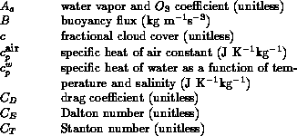
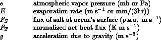
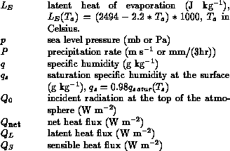
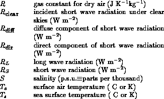
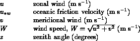
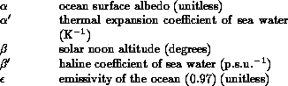
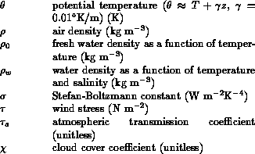

The gradients are evaluated by means of
finite differences. Monthly mean heat fluxes are first calculated, as
described below, with observed
and relevant atmospheric
parameters. Then fluxes are calculated a second time with all
occurences of
replaced by
° C.
Finally, raw (unanalyzed) monthly means of
are estimated by
where stands for any of the heat flux components, such as net longwave
radiation or latent heat flux. In the remainder of this section we
summarize the parameterizations of longwave radiation, sensible and
latent heat fluxes, and then describe the computation of the gradient of
constrained net heat flux with respect to SST.